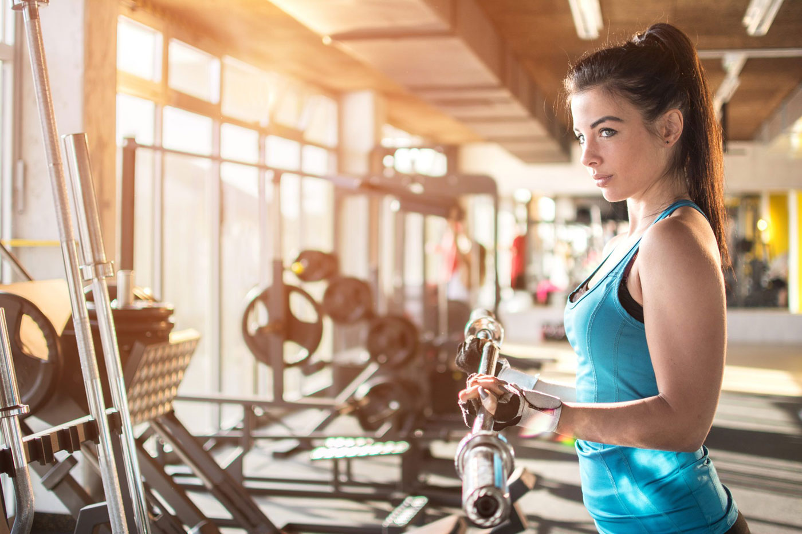

По своему строению мышцы рук относятся к одним из наиболее сложных — кроме бицепса и трицепса существуют десятки мелких мышечных групп, обеспечивающих подвижность кисти и пальцев. Кроме этого, мускулатура рук тесно связана с мускулатурой плечевого пояса.
Мышцы рук укрепляются при выполнении любых упражнений, требующих поднятия тяжелого веса — как гантели или штанги, так и других предметов. Фактически, руки вовлечены почти во всех упражнениях на верхнюю часть тела — начиная с подтягиваний, заканчивая отжиманиями от пола.
С другой стороны, в повседневной жизни в работе участвует преимущественно бицепс — тогда как трицепс получает лишь вторичную нагрузку. Именно по этой причине без должного уровня тренировок мышцы задней поверхности рук постепенно атрофируются и теряют упругость.
// Читать дальше:
Мускулатура рук активно используется в таких видах спорта, как плавание, гребля, волейбол, баскетбол, теннис и даже танец на шесте. При этом ни одна из этих активностей не способна накачать огромные мышцы рук — для этого потребуются изолирующие упражнения с тяжелой штангой.
Важно отметить, что накачать большой бицепс девушкам намного сложнее, чем мужчинам — прежде всего, из-за отличий в гормональном уровне. Именно поэтому не нужно бояться, что выполнение физических упражнений создаст нежелательный объем рук.
Планка на вытянутых руках — важное упражнение не только для укрепления пресса, но и для поддержания тонуса всей мускулатуры верхней половины тела. Оно развивает плечевой пояс, мышцы груди и трицепс. Отметим, что данное упражнение выполняется без движения — но на количество времени.
// Планка — как правильно делать?
Отжимания от пола — логическое продолжение планки на вытянутых руках. При их выполнении повышается нагрузка на трицепс, поскольку именно за счет силы этой мышцы происходит выталкивание тела вверх. Рекомендуемое количество повторений упражнения — не менее 5-7.
// Программа отжиманий для начинающих
Исходное положение — стоя ровно, ноги широко расставлены. Наклонитесь вперед, следя за тем, чтобы спина оставалась ровной. Затем разведите руки в стороны и начните тянуться левой рукой к правой ноге; повторите для другой стороны. Упражнение помогает укрепить осанку и повышает тонус верхней половины тела.
Исходное положение — боковая планка на локте (левая рука на полу, правая за головой). Следите за тем, чтобы таз не опускался слишком низко, а нагрузка веса тела приходилась на мышцы корпуса и пресса. На выдохе начинайте тянуться верхней рукой по направлению к кисти нижней руки.

При выполнении упражнений на мышцы рук важно помнить о том, что основная роль трицепса — выталкивание веса. Для того, чтобы его правильно тренировать, необходимо чувствовать работу мышцы. Одним из наиболее простых упражнений, помогающих это почувствовать, являются разгибания на трицепс в наклоне.

Исходное положение — стоя ровно, ноги на ширине плеч. Возьмите в руки по гантели. Поднимите руки вверх, затем опустите их за голову. Следите за тем, чтобы локти не уходили в стороны — они должны быть достаточно близко к голове. Выполните 12-15 повторений.

Данное упражнение укрепляет не только руки, но и мускулатуру плечевого пояса. При выполнении необходимо следить за тем, чтобы локти не сгибались, а вытянутые руки оставались прямыми. Также не рекомендуется поднимать гантели слишком высоко.
 Еще одно упражнение для укрепления плечевого пояса и верхней части рук. Стоя ровно, медленно поднимите руки с гантелями вверх — но не выше, чем уровень груди. Следите за тем, чтобы почувствовать вовлечение мышц в работу — а не просто механически поднимайте и опускайте вес.
Еще одно упражнение для укрепления плечевого пояса и верхней части рук. Стоя ровно, медленно поднимите руки с гантелями вверх — но не выше, чем уровень груди. Следите за тем, чтобы почувствовать вовлечение мышц в работу — а не просто механически поднимайте и опускайте вес.

При выполнении данного упражнения в работу включается бицепс и мышцы плеч. Стоя ровно, одна рука вытянута в сторону, другая держит гантель (на уровне шеи). На выдохе медленно поднимите вес вверх, до распрямления руки, затем опустите вес. Выполните 12-15 раз для каждой стороны тела.

Усложненная версия отжиманий от пола. При нахождении в верхней точке подтяните к себе руку с гантелью — это не только вовлекает в работу мышцы спины, но и тренирует стабилизирующие мышцы корпуса (требуя умения поддерживать вес тела силой одной руки).
Для укрепления мышц рук и придания им тонуса необходимы регулярные физические тренировки, направленные на вовлечения в работу мускулатуры трицепса (задней поверхности руки). Это могут быть как отжимания, так и различные упражнения с подъемом гантелей или других предметов.